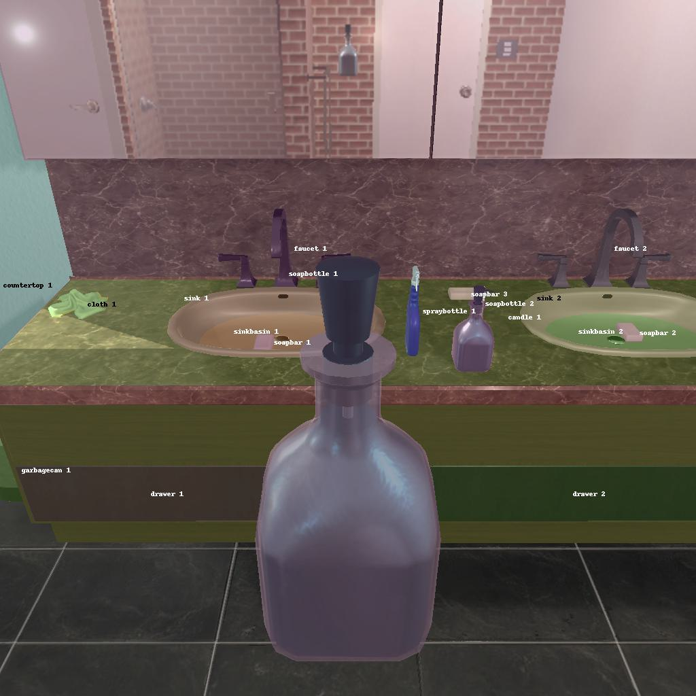

---------------------------------------------------------task: 27---------------------------------------------------------
--------------------------------------------------------------------------------------------------------------------------------------------------------------------
--------------------------------------------------------------------------------------------------------------------------------------------------------------------
Step:--------------------------------------------------------------------------17-------------------------------------------------------------------------------
----------------------------------------
VLM Prompt:
Image1:
Image2:
Image3:
**Instruction**
1. Analyze the provided image to identify all visible household objects, focusing on those relevant to the task description "find two soapbottle and put them in garbagecan."
2. Use the analysis of the image and the task hint "The agent must find an object of the desired type, pick it up, find the correct location to place it, put it down there, then look for another object of the desired type, pick it up, return to previous location, and put it down there with the other object." to answer the question: what is the most reasonable action in the choices for the task description "find two soapbottle and put them in garbagecan"?
4. Decide and write the answer using the template: The answer is: (i): , where i is the real number. If there is no desired object in the image, search every place based on **Initial Observation** to find the object. And if no one is exactly correct, choose a similar answer.
**Initial Observation**
You are in the middle of a room. Looking quickly around you, you can see countertop (1), sinkbasin (1-2), sink (1-2), garbagecan (1), drawer (1-2), toilet (1), handtowelholder (1)
**Answer Choices**
(1): go to countertop 1
(2): go to sink 1
(3): go to garbagecan 1
(4): go to drawer 2
(5): go to sink 2
(6): go to sinkbasin 2
(7): go to toilet 1
(8): go to handtowelholder 1
(9): open drawer 1
(10): close drawer 1
(11): put soapbottle 1 in/on drawer 1
(12): examine soapbottle 1
(13): examine drawer 1
**Answer**
Let's think step by step by following the instructions.
----------------------------------------
----------------------------------------
Original Response:
First, we need to find two soap bottles. In the images, we can see soapbottle 1 in Image1 and soapbottle 3 in Image3. So we have located two soap bottles.
Next, according to the task description and hint, we must pick up the soap bottles and put them in the garbagecan 1. Before we can put them in the garbagecan, we need to go to their location and pick them up.
Since soapbottle 1 is visible and closer in the image, the most reasonable first action would be to go to the location of soapbottle 1 and then pick it up. The garbagecan 1 is also visible in Image3, so after picking up soapbottle 1, we would proceed to put it in garbagecan 1. Afterward, we would need to go to the location of soapbottle 3, pick it up, and put it in the garbagecan 1 with soapbottle 1.
The answer is: (2): go to sink 1
----------------------------------------
----------------------------------------
>>> Refine Original VLM Response and Get Pure Action: go to sink 1
----------------------------------------
-----------------------------------------------------------------
Running time: 14.328833103179932 seconds
Total Money: 17.80881
-----------------------------------------------------------------
-----------------------------------------------------------------
Text Observation:You arrive at loc 2. On the sink 1, you see a faucet 1, a cloth 1, and a soapbar 1.
-----------------------------------------------------------------
UNSUCCEED